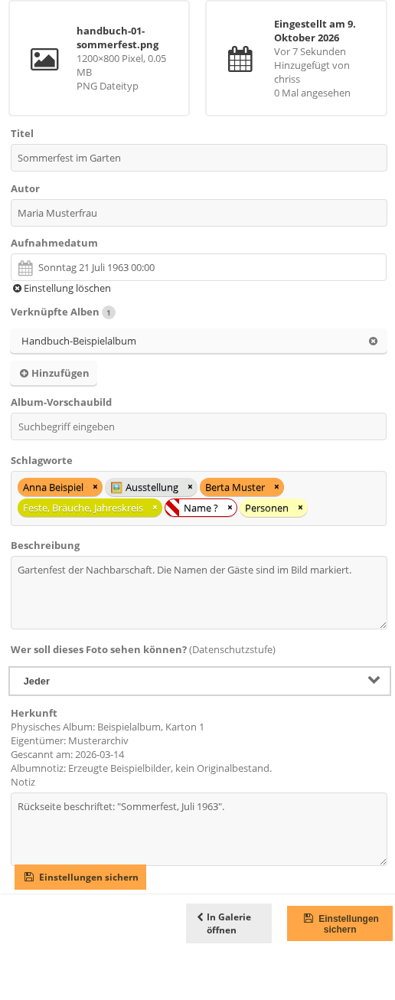
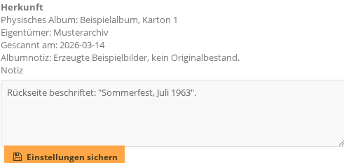
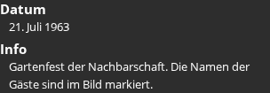
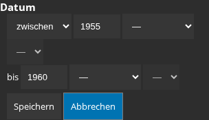
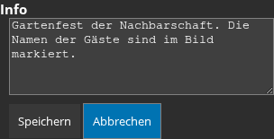
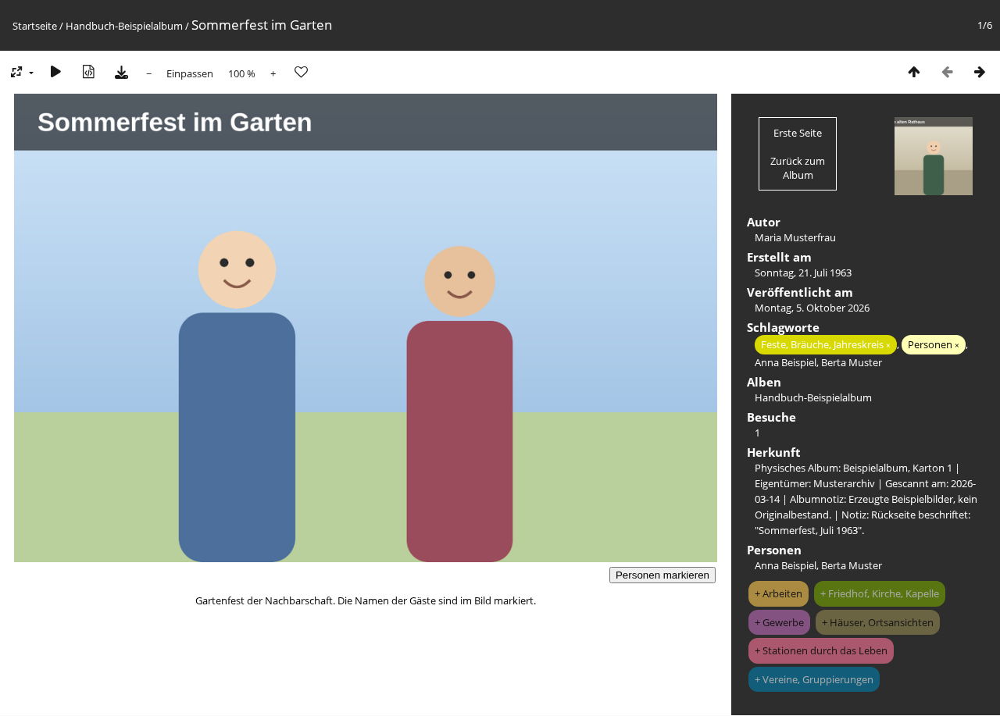

Die Texte eines Fotos stehen in seinen Eigenschaften
(admin.php?page=photo-<nummer>-properties). Dorthin führt die
Stapelverarbeitung oder ein Klick auf ein Foto in der Verwaltung. Die Seite ist der
Verwaltung vorbehalten.

Die Eigenschaften eines Fotos, hier mit allen Feldern ausgefüllt.
Titel, Autor, Aufnahmedatum und Beschreibung
Titel: die Überschrift des Fotos. Beim Hochladen trägt Piwigo den
Dateinamen ohne Endung ein und ersetzt Unterstriche durch Leerzeichen, aus
zz_test_a.jpg wird also zz test a. Wird das Feld von Hand geleert,
zeigt Piwigo wieder den Dateinamen an.
Autor: wer das Foto aufgenommen hat.
Aufnahmedatum: wann das Foto entstanden ist, nicht wann es hochgeladen
wurde. Ein Klick auf das Feld öffnet einen Kalender.
Einstellung löschen darunter leert das Datum wieder. Ein hier gesetztes
Datum gilt immer als genauer Tag. Wer nur das Jahr kennt oder ein ungefähres Datum
eintragen will, benutzt das Feld Datum auf der Fotoseite, siehe unten,
Datum und Info auf der Fotoseite.
Beschreibung: freier Text zum Foto. Auf der Fotoseite heißt derselbe Text
Info.
Auf dem Bildschirm liegen zwischen Aufnahmedatum und
Beschreibung noch drei weitere Felder, siehe unten,
Die weiteren Felder derselben Seite.
Alle Änderungen werden erst mit Einstellungen sichern übernommen.
Der Dateiname steht oben links im grauen Kasten und lässt sich nicht
ändern. Dort stehen auch Abmessungen, Dateigröße und Dateityp sowie rechts daneben, wann
das Foto eingestellt wurde, von wem und wie oft es angesehen wurde.
Die weiteren Felder derselben Seite
Verknüpfte Alben: die Alben, in denen das Foto liegt. Das
x entfernt eines, Hinzufügen ergänzt eines.
Album-Vorschaubild: macht dieses Foto zum Titelbild der hier gewählten
Alben.
Wer soll dieses Foto sehen können? (Datenschutzstufe): schränkt ein, wer
das Foto zu sehen bekommt. Jeder ist die offene Einstellung. Die anderen
vier Stufen nennen jeweils alle Gruppen, die das Foto noch sehen:
Administratoren, Administratoren, Familie,
Administratoren, Familie, Freunde und
Administratoren, Familie, Freunde, Kontakte. Je länger die Aufzählung,
desto mehr Personen sehen das Foto.
Beim Sichern gilt für Verknüpfte Alben genau die Liste, die im Feld steht.
Ein Album, das hier fehlt, verliert das Foto. Das Feld ergänzt also nicht, es ersetzt.
Wer ein Foto einem weiteren Album hinzufügen will, ohne die bisherigen zu verlieren,
benutzt in der Stapelverarbeitung die Aktion Mit einem Album verbinden
(siehe Fotos zu einem Album hinzufügen). Das Album, in dem die
Datei physisch liegt, kann nicht entfernt werden.
Herkunft und Notiz
Unter den Kernfeldern steht der Abschnitt Herkunft. Er beschreibt, woher die
Vorlage stammt.

Der Abschnitt Herkunft. Nur die Notiz ist hier veränderbar.
Physisches Album, Eigentümer,
Gescannt am und Albumnotiz stehen als Text da und lassen
sich auf dieser Seite nicht bearbeiten. Sie gelten für das ganze Album und werden dort
gepflegt, in den Eigenschaften des Albums (siehe
Herkunft des Albums). Sie erscheinen hier erst, wenn sie im
Album mit Auf N Fotos anwenden auf die Fotos übertragen wurden. Ein Foto,
das später zum Album hinzukommt, übernimmt sie von selbst.
Notiz ist das einzige Feld dieses Abschnitts, das zu diesem einen Foto
gehört. Hier steht, was nur für dieses Bild gilt, etwa eine Beschriftung auf der Rückseite
oder ein Schaden am Abzug.
Der Abschnitt hat eine eigene Schaltfläche Einstellungen sichern direkt
darunter. Sie sichert die Notiz. Die Meldung lautet danach
Herkunft gespeichert.
Datum und Info auf der Fotoseite
Datum und Beschreibung lassen sich auch direkt auf der öffentlichen Fotoseite bearbeiten,
rechts in den Angaben unter Datum und Info. Das ist
Administratoren vorbehalten. Alle anderen, auch angemeldete Benutzer, können beide Angaben nur
lesen, und sehen sie nur dann, wenn sie ausgefüllt sind.

Datum und Info auf der Fotoseite, so wie sie ohne Bearbeitung erscheinen.
Ein Klick auf das Datum oder den Text öffnet das Bearbeitungsfeld. Fehlt eine Angabe noch,
steht dort Klicken, um ein Datum hinzuzufügen oder
Klicken, um eine Beschreibung hinzuzufügen. Jede der beiden Angaben wird für sich
gespeichert. Abbrechen schließt das Feld, ohne etwas zu ändern.
Ein Datum auf der Fotoseite eintragen
Bei alten Fotos ist der genaue Tag oft unbekannt. Das Datum kann deshalb nur aus einem Jahr
bestehen, aus Monat und Jahr oder aus einem genauen Tag.
Auf das Datum klicken. Es erscheinen ein Auswahlfeld, ein Feld für das Jahr und zwei
Auswahlfelder für Monat und Tag.
Das Jahr vierstellig eintragen, zum Beispiel 1965. Erlaubt sind Jahre von 1800
bis zum laufenden Jahr.
Ist der Monat bekannt, ihn auswählen. Erst danach lässt sich auch der Tag wählen. Bleibt
beim Monat oder Tag der Strich stehen, gilt er als unbekannt.
Auf Speichern klicken. Die Seite lädt neu und zeigt das Datum, je nach
Angabe als 1965, März 1965 oder 14. März 1965.
Das erste Auswahlfeld vor dem Jahr gibt dem Datum einen Zusatz. Es lässt sich erst wählen,
wenn ein Jahr eingetragen ist:
ca.: ungefähr, angezeigt als ca. 1965.
vor: vor diesem Datum entstanden, angezeigt als vor 1965.
nach: nach diesem Datum entstanden, angezeigt als
nach März 1965.
zwischen: in einem Zeitraum entstanden. Darunter erscheint eine zweite
Zeile, die mit bis beginnt, mit Jahr, Monat und Tag für das Ende. Das Ende
darf nicht vor dem Anfang liegen. Angezeigt werden beide Angaben mit einem Strich
dazwischen.
Bleibt der Strich im ersten Auswahlfeld stehen, gilt das Datum als genau.

Ein Zeitraum: zwischen 1955 und 1960, Monat und Tag unbekannt.
Um ein Datum zu entfernen, das Jahr im Bearbeitungsfeld löschen und auf
Speichern klicken. Die übrigen Felder spielen dann keine Rolle.
Die Info auf der Fotoseite eintragen
Auf den Text unter Info klicken. Er erscheint in einem Textfeld.
Den Text ändern oder neu schreiben. Zeilenumbrüche bleiben erhalten.
Auf Speichern klicken. Die Seite lädt neu und zeigt den neuen Text.

Die Info im Bearbeitungsfeld.
Um die Info zu entfernen, das Textfeld leeren und auf Speichern klicken.
Datum, Info und Bilddatei
Datum und Info werden nicht nur in der Galerie gespeichert, sondern auch in die Bilddatei
geschrieben. Andere Bildprogramme zeigen sie dann in der Bildbeschreibung der Datei, vor
dem Text zur Herkunft.
Datum und Info sind dieselben Angaben wie Aufnahmedatum und
Beschreibung in den Eigenschaften des Fotos. Was auf der einen Seite
gespeichert wird, steht auch auf der anderen.
Bei einem Datum wie ca. 1965 steht in den Eigenschaften der erste Tag, den die
Angabe umfasst, hier also der 1. Januar 1965. Solange das Aufnahmedatum dort nicht
verändert wird, bleibt es beim Sichern der Eigenschaften bei ca. 1965. Wird es
dort oder in der Stapelverarbeitung geändert, gilt es danach als genauer Tag.
Erscheint nach dem Speichern die Meldung
Gespeichert, aber nicht in die Bilddatei geschrieben, ist die Angabe in der
Galerie gespeichert, aber die Bilddatei blieb unverändert. Der Grund steht hinter der
Meldung. In dem Fall die Verwaltung der Galerie benachrichtigen.
Wo die Texte öffentlich erscheinen

Die Fotoseite. Links das Foto mit seinem Titel, rechts die Angaben.
Titel: als Überschrift über dem Foto und im Titel des Browserfensters.
Autor: rechts in den Angaben unter Autor.
Aufnahmedatum: rechts unter Datum. Weiter unten steht
unter Veröffentlicht am das Datum des Uploads.
Beschreibung: rechts unter Info.
Herkunft: rechts als eigene Zeile. Die fünf Angaben stehen dort
hintereinander, durch senkrechte Striche getrennt.